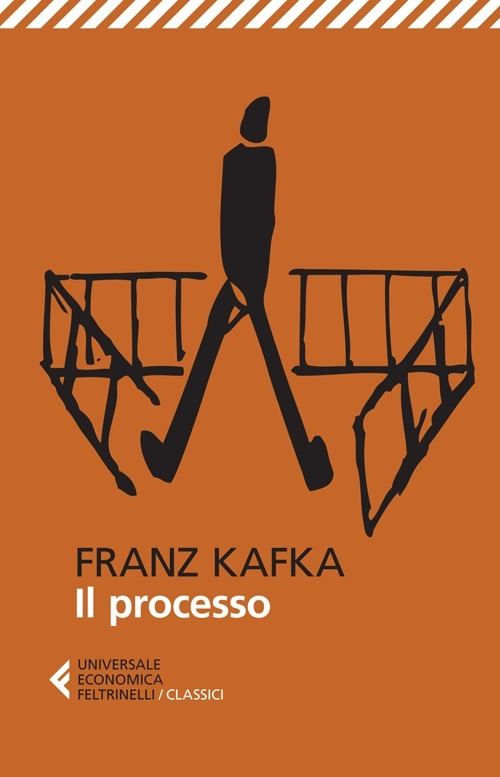

Una mattina Josef K. viene arrestato senza alcuna spiegazione, accusato di un crimine che non gli viene mai rivelato, da un tribunale di cui non riesce mai a comprendere le regole. Da quel momento, la sua esistenza viene lentamente risucchiata in un labirinto di uffici, avvocati inefficaci e procedure incomprensibili, mentre la sua colpa — mai definita — sembra darsi per scontata da tutti tranne che da lui stesso. Kafka trasforma la burocrazia in un incubo esistenziale, costruendo un romanzo inquietante sull'impotenza dell'individuo di fronte a un sistema che non ha bisogno di spiegazioni per condannare.
Ancora non l'ho letto, quindi per ora posso solo offrirti la copertina e la mia buona intenzione.
Ripassa più avanti.
Le frasi più belle di questo libro dormono ancora tra le sue pagine, in attesa che io le scovi.